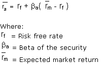

A model that describes the relationship between risk and expected return and that is used in the pricing of risky securities.
The general idea behind CAPM is that investors need to be compensated in two ways: time value of money and risk. The time value of money is represented by the risk-free (rf) rate in the formula and compensates the investors for placing money in any investment over a period of time. The other half of the formula represents risk and calculates the amount of compensation the investor needs for taking on additional risk. This is calculated by taking a risk measure (beta) that compares the returns of the asset to the market over a period of time and to the market premium (Rm-rf). The CAPM says that the expected return of a security or a portfolio equals the rate on a risk-free security plus a risk premium. If this expected return does not meet or beat the required return, then the investment should not be undertaken. The security market line plots the results of the CAPM for all different risks (betas).
Using the CAPM model and the following assumptions, we can compute the expected return of a stock in this CAPM example: if the risk-free rate is 3%, the beta (risk measure) of the stock is 2 and the expected market return over the period is 10%, the stock is expected to return 17% (3%+2(10%-3%)).
{kind=link}